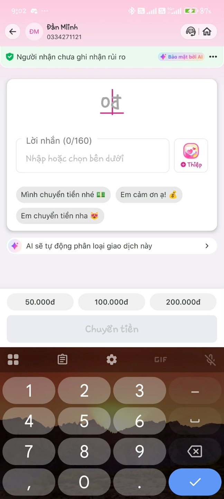

Nhóm Thực Hiện: F2
Track: Personal Finance
Self-Use & Lỗi Thực Tế
Rào cản người cao tuổi
*Bằng chứng trích xuất trực tiếp từ Case-study thực tế trên app MoMo Moni.
Cho người dùng bận rộn và người già mắt kém thực hiện tác vụ ra lệnh chuyển tiền bằng một câu thoại tự nhiên, AI sẽ quyết định bóc tách thực thể số điện thoại/danh xưng để gọi công cụ điều hướng ngầm (trigger_app_deep_link), trả về kết quả là Màn hình nháp giao dịch điền sẵn 100% thông tin người nhận, chỉ chờ user nhập tiền.

| Value (Giá trị) | Trust (Niềm tin) | Feasibility (Khả thi) | Tín hiệu học |
|---|---|---|---|
| Chuyển dịch từ Hỏi-đáp thông tin sang Thực thi tác vụ. Cắt giảm 4 thao tác bấm tay cho người già và người bận rộn. | Người dùng nhìn thấy tên người nhận hiển thị to rõ trên giao diện nháp bị sai, hoặc AI hiện cảnh báo số điện thoại chưa kích hoạt ví. | CỨng dụng chạy mô hình ReAct hẹp bóc tách Regex ngay tại Local, chi phí gọi API tối thiểu, độ trễ xử lý dữ liệu dưới 1 giây (đảm bảo trải nghiệm tức thì). | Hành vi đính chính lưu vào Local Cache của phiên chat để Context-learning ghi nhớ mối quan hệ Alias cho lần sau. |
AI "Dọn Đường" Hành Động
Bóc tách dữ liệu, đối chiếu danh tính hệ thống, tự động bật Deep-link và điền sẵn biểu mẫu giao dịch.
Con Người Duyệt Cuối
Kiểm tra lại tên người nhận hiển thị to rõ, tự tay điền số tiền cần chuyển và thực hiện bảo mật (FaceID/Mật khẩu).
Lý do: Giao dịch tài chính có rủi ro rất cao, không được phép tự động hóa hoàn toàn.
Happy Path Lệnh đầy đủ -> Gọi Deep-link nhảy thẳng vào màn hình nháp điền sẵn thông tin trong 400ms.
Low-Confidence
Lệnh mơ hồ "Chuyển tiền cho mẹ" -> Hiện ngay 2
nút gợi ý tương tác nhanh [Mẹ] hoặc
[Mẹ vợ].
Failure Path SĐT sai/chưa đăng ký ví -> Hiện thông báo lỗi trực quan.
Correction Path User đính chính bằng cách chạm nút gợi ý -> Cache lưu lại làm tín hiệu học ngữ cảnh cho phiên sau.
Test Case 1: Đường Thuận
Input: "Tôi muốn chuyển tiền tới momo 0936768999"
-> Hệ thống tự chuyển cảnh, điền sẵn thông tin nhận: Mỹ Gia Hiếu.
Test Case 2: Luồng Gây Nhiễu
Input: "Chuyển tiền cho mẹ"
-> Hệ thống kích hoạt cơ chế hỏi lại, xuất hiện cụm nút bấm chọn nhanh danh tính.